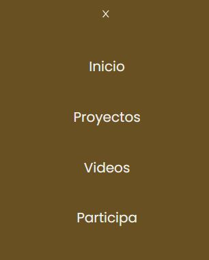

Proyecto "ArboVita Landing Page"
Principales Características Implementadas:
A continuación, se presentan las secciones del proyecto Landing Page ArboVita, desarrollada según los requerimientos del cliente. Cada sección fue diseñada para cumplir con los objetivos de funcionalidad y estética establecidos. Las imágenes reflejan las solicitudes específicas del cliente y el sistema web implementado, en el orden de aparición de la página.
1. Menú Fijo y Desplegable: Barra de navegación fija con desplazamiento suave entre secciones. Incluye las secciones principales y el logotipo de ArboVita para mantener la identidad visual.

2. Sección Inicio: Una bienvenida con título principal llamativo, descripción breve de los objetivos y misión del proyecto para captar la atención desde el principio.
3. Sección Nuestros Proyectos:Presenta imágenes de eventos y proyectos pasados, con descripciones que muestran el impacto de las actividades realizadas.
4. Mapa interactivo:Muestra en Google Maps todas las ubicaciones donde se han realizado actividades de reforestación, ayudando a los usuarios a visualizar el alcance del proyecto.
5. Sección Videos: Reproductor integrado de YouTube para compartir videos educativos sobre reforestación y concientización ambiental.
6. Noticias Ambientales: Muestra tres noticias destacadas sobre temas medioambientales, cada una con título, descripción breve, imagen y enlace a contenido externo.
7. Sección Participa: Breve explicación de la importancia de involucrarse, con un formulario para inscribirse en eventos, solicitando nombre, correo y número de participantes.
8. Google Calendar: Integración de un calendario que detalla los próximos eventos de reforestación, con breves descripciones para motivar la participación.
9. Galería de Fotos: Carrusel interactivo que presenta imágenes representativas de las actividades realizadas, mostrando el impacto visual de los proyectos.
10. Sección Donar: Un espacio dedicado a incentivar donaciones, con imágenes motivadoras y un botón destacado que enlaza a la página de donaciones de PayPal.

11. Colaboradores Destacados: Presenta logotipos y una descripcion de la importancia de los colaboradores importantes para motivar más apoyo.
12. Testimonios: Apartado donde algunos participantes comparten sus experiencias, inspirando a otros a involucrarse en futuros eventos.
13. FAQ (Preguntas Frecuentes): Información sobre la ONG, donaciones y proyectos presentada en formato desplegable para facilitar la lectura.
14. Footer: Incluye información de contacto (dirección, teléfono, correo), iconos de redes sociales y el logotipo de ArboVita, cerrando la página con un diseño profesional.